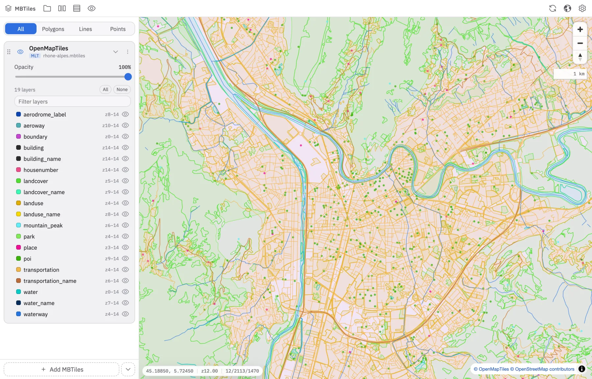
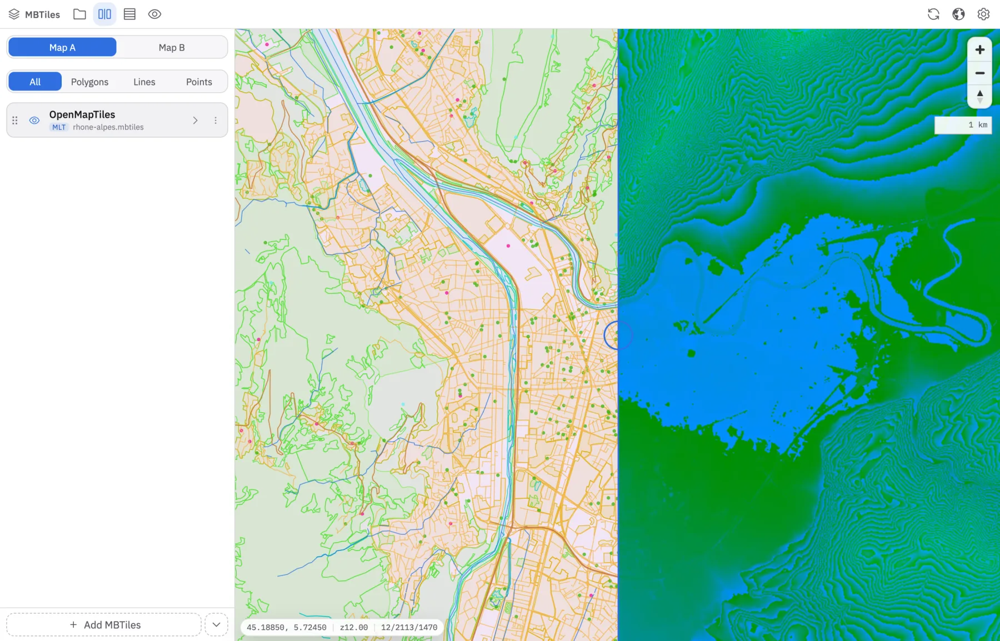
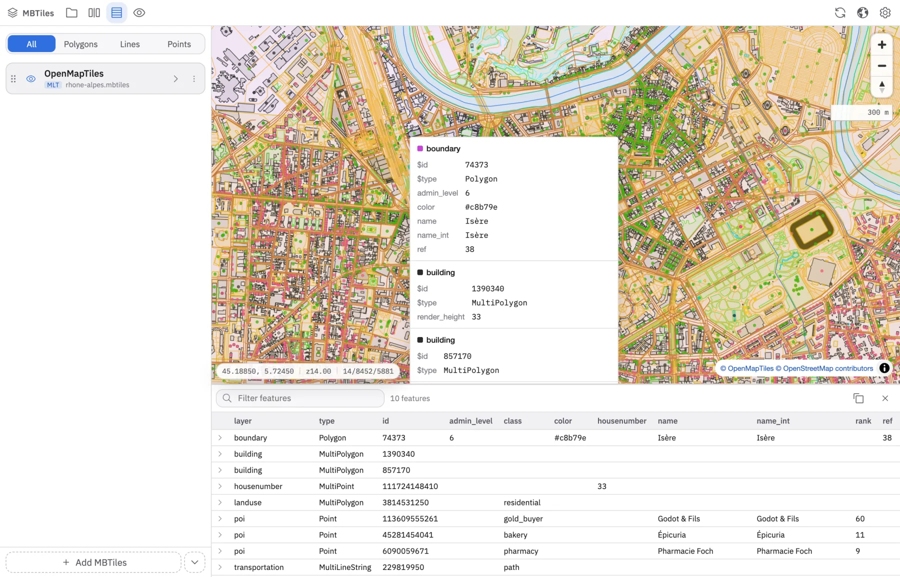
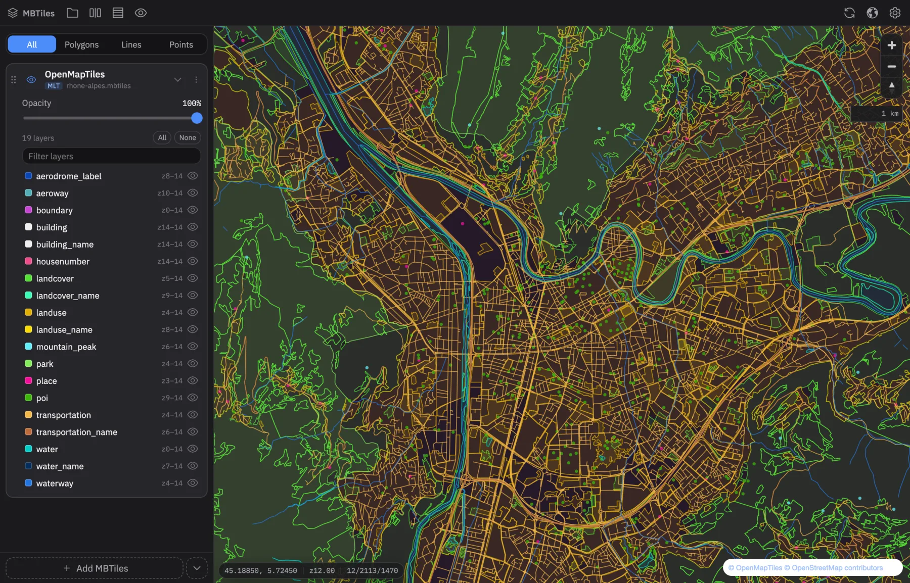

Look inside an
.mbtiles file
A desktop app that opens a tileset straight off disk — every layer coloured and listed, features inspectable, two files side by side. No docker, no tile server, no upload.
macOS · Windows · Linux

Built for the moment after a tile build
The point is answering “did that actually work?” — quickly, on the file you just produced, without standing anything up first.
Every layer, coloured
A stable colour per source-layer name, so water reads blue and roads read orange in every file you open. Show, hide, reorder and fade each one.
Compare two tilesets
A split view with a swipe handle and a synced camera. Old build on one side, new build on the other.
Inspect anything
Click, hover or hold Shift to read a feature's attributes, then open the sortable, searchable table of everything you selected.
Tile-level debugging
Tile boundaries, collision boxes, a live z/x/y readout, and “copy this tile as GeoJSON” from the right-click menu.
100% offline
A small Rust server reads tiles straight out of the SQLite file over localhost. The file never leaves your machine.
Reloads itself
The file is watched. Rebuild the tileset and the map redraws — with the same camera, the same order, the same layers hidden.
Two files, one swipe
Open a second set of tiles in map B and drag the handle across. The cameras stay locked together, and the panel gets A/B tabs so each side keeps its own stack.
- Vector against raster, old build against new
- Stack several files per side, in the order you choose
- Split position and both stacks come back next launch

Read the data, not just the picture
Click a feature to see its attributes where you clicked, and open the bottom panel for the full table of everything under the pointer.
- Sortable and searchable, with the raw JSON per row
- Copy the selection as GeoJSON, or a whole tile at once
- Hidden layers never answer a query

Light, dark, and small
The app follows your system theme, and below 840px the layers panel becomes a bottom sheet — so it stays usable in a window parked beside your editor.

Keyboard first
| ⌘/Ctrl + O | Open an MBTiles file |
| L | Layers panel |
| S | Split view |
| F | Feature table |
| B | Basemap |
| T | Tile boundaries |
| I | Popup: click → hover → off |
Or build it yourself
Tauri, Svelte and MapLibre GL on the front, hyper and SQLite on the back. Around 1000 lines of Rust and a frontend you can read in an afternoon.
# clone, install, run
git clone https://github.com/Akylas/mbview-rs.git
cd mbview-rs
yarn install
yarn dev
Download
Latest release, for every desktop platform. Free, forever.
Something not working? Open an issue — or come say what you need in Discussions.